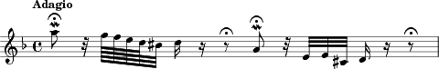
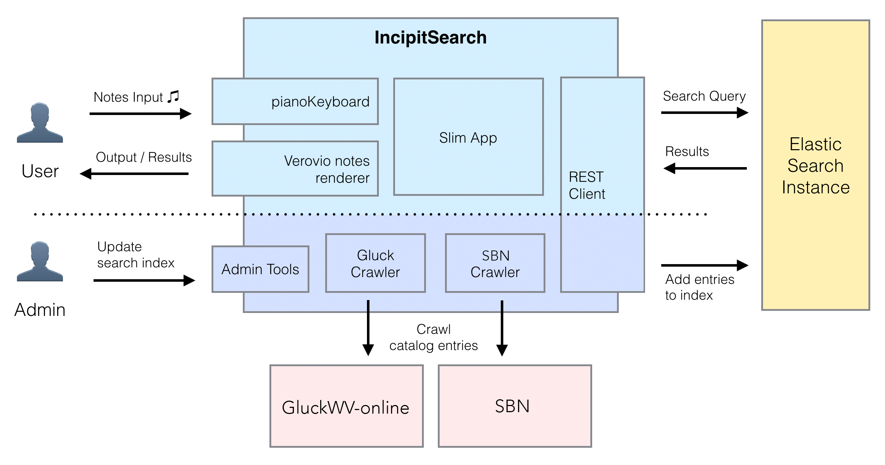

29.5.2018 | Eötvös Loránd Tudományegyetem
DH 2018 Budapest
IncipitSearch
A common interface for searching in music repositories
Slides: https://annaneo.github.io/DH-2018-Budapest-IncipitSearch
Anna Neovesky & Frederic von Vlahovits |
 @digicademy |
@digicademy |
 digicademy |
CC-BY 4.0
Digital Academy
digicademy |
CC-BY 4.0
Digital Academy
Academy of Sciences and Literature | Mainz
What is an incipit?
Source: Toccata and Fugue in D minor, BWV 565 (Bach, Johann Sebastian) in IMSLP
- beginning or characteristical sequence of a music piece
- used to catalogue music
- first three measures or first ten notes
- represents and identifies a music piece
- first analytical hints on motives
Overview
- Approach and webtool to search music using music incipits
- Music Information Retrieval
- Idea of IncipitSearch
- Music Annotation and Open Content in Musicology
- Functionality and underlying technology
- Possibilities of usage of IncipitSearch
01
Searching Music
Searching Music
Music Information Retrieval Systems
- different possibilities to implement search
- query by humming
- acoustic fingerprinting
- digital musicology: searching in notated music
02
Idea behind IncipitSearch
What is the idea of IncipitSearch?
Search in notated music
- Digital catalogue of Gluck's work
- Need for further searching possibilities
- Incipits to illustrate adoptions of motives
{kind=link}
{kind=link}
What is the idea of IncipitSearch?
- 15 music projects at the Academy of Sciences and Literature | Mainz
- fundamental research, especially critical work editions
- possible application of incipit search functionality
- generic implementation
- service that offers search functionality and aggregates available repositories
{kind=link}
04
Considerations: Repositories and Standards
Preliminary considerations
- What kind of music repositories can be integrated?
- Which content is openly available?
- What kind of annotations are used?
- Which overall standard to use in IncipitSearch?
Music Annotation
Standards and formats for music
General standards
- marcXML
- RDF
Repositories
Digital repositories:
- Library catalogues
- Specific collections
- Digital editions
Scans or analogue:
- digitized music pieces
- printed catalogue raisonees
- Verlagskataloge
{kind=link}
{kind=link}
03
The webapplication IncipitSearch
Software Architecture
{kind=link}
IncipitSearch metadata format
- preliminary thoughts and goals
- low-threshold possibility to notate Incipits for new content
- applicable on different types of repositories
- addition to existing Markup or as standalone / first annotation
- RDF!
- interoperable through differenz serializations
- can be added to existing markup with JSON-LD, HTML Microdata and RDFa
- standalone notation (Turtle)
schema.org
Vocabulary for semantic information
- joined initiative of search engine providers
- simple vocabulary to implement semantic information on web pages for further processing by search engines
- central: MusicComposition
- own extension of vocabulary "MusicIncipit"
IncipitSearch metadata format

Schema: Torsten Schrade
{kind=link}
04
Outlook and Conclusion
Where are we going with IncipitSearch
Plans and desiderata
- Optimisation of existing features, implementation of new functionality (exchange with community)
- search interface
- search possibilities (rythm)
- result presentation and faceting
- Growing platform
- integration of further formats and repositories
- webfrom to integrate own catalogues
- Authority data and LOD
- Integration of authority data
- Provide all aggregated data for further reuse
- stimulus for digitization of work catalogues and creation of own metadata
Prespectives for (Digital) Musicology?
- connection between standalone repositories
- intuitive music search
- symplifying creation of additional metadata
- promotion of LOD-Technologien in digital musicology
- adding fields of discourse to digital musicology